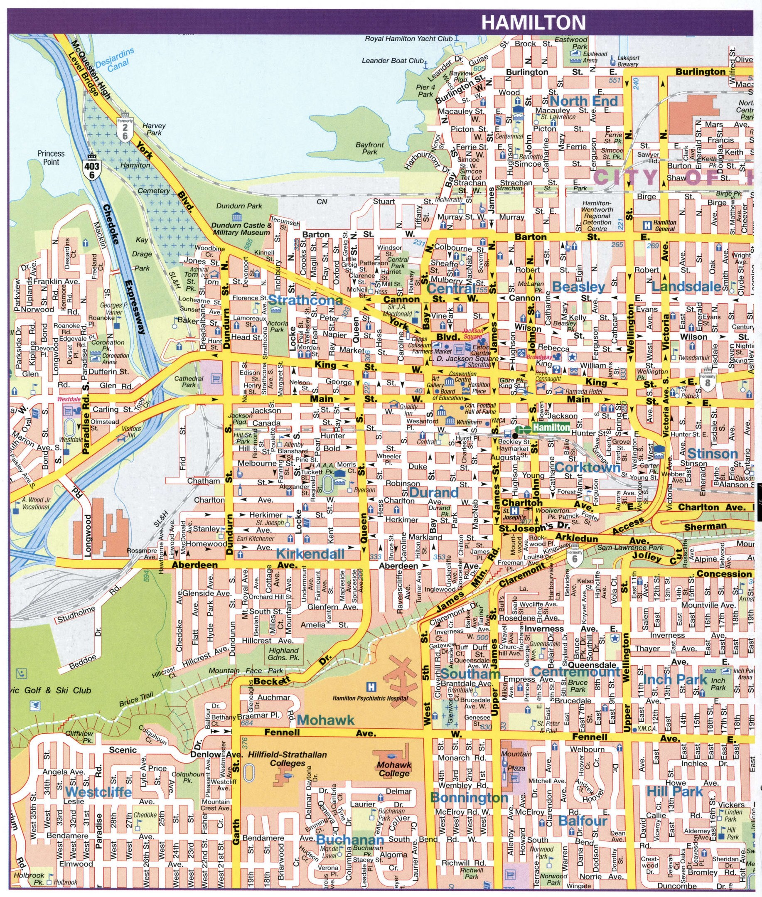
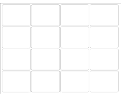
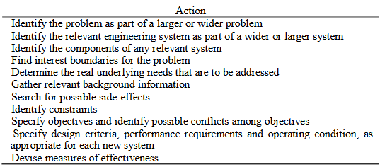

Assignment 2 - Software Defined Network Traffic System
Due - February 24, 2023
Introduction
The Hamilton Public Transportation department wishes to bring some intelligence to the control of traffic in its downtown area. Since there are
many one-way streets it should be possible to synchronize the traffic lights to facilitate traffic flow. Traffic flow is very similar to the flow
of packets in a computer network, therefore it should be feasible to control the flow of traffic through a software defined network.
This assignment is more in the form of a knowledge base (or sometimes called a Book of Knowledge, for example see
The Guide to the Software Engineering Book of Knowledge). You will be
collecting and analyzing this project from several angles, and you will group your knowledge in various
categories before proposing your design.
This is not a for-profit based project. It is a service-based project. In the end the hope is that traffic conditions
in downtown Hamilton will be alleviated by a well-thought out centralized traffic controller. The implications
are that proper traffic control will not only save the travellers' time and money for fuel, but the absence of
vehicles idling at a stop light will be better for the environment.
Videos
Research Material
Background information
The downtown area of Hamilton consists of the following:

As you can see from the map there are many one-way streets in downtown Hamilton. The goal is to synchronize
these lights by some central controller such that a driver can drive through the downtown area in one
direction at a certain speed without ever having to stop his/her car. The timing of these lights will
determine the speed of the traffic.
Traffic Challenges
One can start this problem by assuming a perfectly ideal situation. This would mean one car on one
road travelling in one direction. If you start with such a grid, you can determine the timing of the
traffic lights to ensure that no one has to face a red light. In the following 5×5 grid, assume the
lights are 500m apart (0.5km) making the grid 2km×2km:

To approach this problem, answer the following questions in your submitted assignment:
- Synchronize your lights so that one car travelling west to east can drive from one end of the grid
to the other without stopping. What is the speed of this car?
- Now synchronize your lights so that one car can travel from north to south from the top of the grid
to the bottom without stopping. Can the synchronization of these lights (north to south) co-exist with
the synchronization of the west-to-east lights?
- Now synchronize all lights on this grid assuming there is one car on each of the five west-to-east
road and one car on each of the five north-to-south road. Does your method of synchonization hold up?
What is the speed of these cars?
Non-Ideal Situations
If the synchronization of lights depended on an ideal situation, there would probably be no need
for a central controller. Non-ideal situations do occur. In your assignment, answer how you would
deal with the following:
- Rush Hour is the busy part of the day when towns and cities are crowded, either in the
morning when people are travelling to work, or in the evening when people are travelling home.
- Road Maintenance is work that takes place on roads from highways to backroads to ensure
they remain strong, safe and efficient. Road maintenance takes many forms, from pothole repair
to re-applying highway surfacing, but the overarching aim is to keep road users safe, manage
traffic and maintain upkeep.
- Traffic Accidents occur when a vehicle collides with another vehicle, pedestrian,
animal, road debris, or other stationary obstruction, such as a tree, pole or building.
Traffic collisions often result in injury, disability, death, and property damage as well
as financial costs to both society and the individuals involved.
- Sports Events are any professional or amateur sport, athletic game, contest, event,
or race involving machines, persons, or animals, for which admission tickets are offered for
sale and that is viewed by the public. Sports events concentrate people at specific locations
on game day.
- Construction means any physical activity on the site involved in the erection of a
structure, cladding, external finish, formwork, fixture, fitting of service installation and
the unloading of plant, machinery, materials or the like. Road construction projects have a
significant effect on the operational performance of the roads (say, freeways) leading to an
increase in congestion and delay during the construction period.
Information Collection
To assist with the corner-cases of traffic control, some sort of congestion detection mechanism
is required. In your assignment, please answer how the following can help with your traffic
controller.
- Checkpoint Capture Unit captures information such as license plate, vehicle type,
vehicle color and radar-detected vehicle speed as a vehicle passes by. This data can be
collected and utilized for further application. A typical checkpoint capture unit is shown
below:
- Intersection Violation Capture Unit captures unlawful and unsafe driving behaviors
such as wrong-way driving, red-light running, and illegal lane change. They help regulate
responsible driving, prevent traffic accidents, improve transportation efficiency, and
facilitate law enforcement, allowing operators in traffic control centers to alert the
authorities who can take action in real time to improve public safety and hold drivers
accountable. A typical intersection violation capture unit is shown below:
- Portable Speed Detector is a device used to measure the speed of moving objects.
It is used in law-enforcement to measure the speed of moving vehicles as well as in sporting
events to measure the speed of a given object such as a puck, baseball, or tennis ball.
The portable speed measures the speed of the objects at which it is pointed by detecting a change in
frequency of the returned radar signal caused by the Doppler effect, whereby the frequency
of the returned signal is increased in proportion to the object's speed of approach if the
object is approaching, and lowered if the object is receding. A typical speed detector is
shown below:

Centralized Traffic Management
To assist with deriving your algorithm, you might consider the following questions:
- Software Defined Network is an architecture that abstracts different, distinguishable layers
of a network to make networks agile and flexible. A typical representation of SDN architecture comprises
three layers: the application layer, the control layer and the infrastructure layer. These layers
communicate using northbound and southbound application programming interfaces. See the references
on the Software Defined Network at the top of the assignment for more information. Is such a network
architecture applicable to traffic control? Why or why not?
- Traffic Analysis is the process of intercepting and examining messages in
order to deduce information from patterns in communication. In general, the greater
the number of messages observed, or even intercepted and stored, the more can be
inferred from the traffic. Traffic analysis tasks may be supported by dedicated
computer software programs. Advanced traffic analysis techniques may include various
forms of social network analysis.
- Traffic Guidance means the recognition of the various situations where traffic
control and guidance are required, and the implementation of effective procedures,
including traffic control, to safely control and guide traffic with minimal interruptions
and delays.
- Regional Traffic Algorithm analyzes the connectivity among the road sections
according to the characteristics of the regional road network,
and draw to seek the regional road network the shortest path algorithm between two nodes.
Take a look at the following research paper:
Timing Optimizations for
Regional Traffic Signals. Would you say traffic control is an area of interest for researchers?
The Traffic Light
At the base of your traffic controller is the traffic light. Look at the links to traffic simulators
given in the Research Material section of the assignment and add to your assignment any other
considerations you can think of connected with the traffic light.
Conclusion
You have up until know analyzed many sides of this problem. Do you think you could prepare a
centralized traffic controller that would alleviate traffic problems in downtown Hamilton? Is such
a project worth it, or are there simply too many variables that trying to bring order would be pointless?
Weekly Problems
Week 4 - The Environment and Public Welfare
- Locate three reports which are aligned with the Global Reporting Initiative.
Compare and contrast the data contained within them. How readily does the data
enable comparisons between the different organisations?
- Select two of the 2015 Sustainable Development Goals and explain how
progress towards the targets could be measured. How could these measurements
inform the overall assessment of progress?
- A study is being carried out on alternative energy sources for the future
generation of electricity in your state. The energy sources include coal, natural gas,
nuclear, solar and wind energy (and combinations thereof). List and describe the
environmental and social effects which would need to be considered when
comparing these alternatives.
Week 5 - The Design Process I
- What are the main engineering problems to be faced in establishing a
permanent human settlement on the moon?
- The fishing industry of Newfoundland wants to improve the efficiency of detecting
large schools of fish as well as the species of the fish in the school. This is to prevent
the overfishing of endangered species. What are the components of such an engineering system,
and provide design details for each component.
Week 6 - The Design Process II
- Consider the energy supply and distribution system of the city where you live.
How would you undertake a planning study to provide adequate energy over the
next thirty years? What background information would you want to gather in
undertaking this study? List several alternative sources of energy that might be
used to increase supply to meet demand. What other energy options would you
consider in your study?
- The Government of South Australia is considering developing a nuclear waste
storage site in a remote area of the state. Go through the steps of problem
formulation for this project using the below table as a guide. Include in this process a list
of the background data that you would require in order to adequately formulate the
problem.

Marking Rubric
Assignment 2 is worth 15% of your final grade and as such is marked out of 15 as follows:
| Does not meet expectations | Satisfactory | Good | Exceeds Expectations |
|---|
Traffic Challenges - the ideal situation
(2 marks) | Does not meet requirements | Meets the most important requirements | Meets all requirements with minor errors | Meets all requirements with no errors |
Non-ideal Situations
(2 marks) | Does not meet requirements | Meets the most important requirements | Meets all requirements with minor errors | Meets all requirements with no errors |
Information Collection
(2 marks) | Does not meet requirements | Meets the most important requirements | Meets all requirements with minor errors | Meets all requirements with no errors |
Centralize Traffic Management
(3 marks) | Does not meet requirements | Meets the most important requirements | Meets all requirements with minor errors | Meets all requirements with no errors |
The Traffic Light
(1 marks) | Does not meet requirements | Meets the most important requirements | Meets all requirements with minor errors | Meets all requirements with no errors |
The Conclusion
(2 marks) | Does not meet requirements | Meets the most important requirements | Meets all requirements with minor errors | Meets all requirements with no errors |
Weekly Questions
(3 marks) | Answers no question correctly | Answers some questions correctly | Answers most questions correctly | Answers all Questions correctly |
Submission
Please email any source code and documentation to:
miguel.watler@senecacollege.ca
Late Policy
You will be docked 10% if your assignment is submitted 1-2 days late.
You will be docked 20% if your assignment is submitted 3-4 days late.
You will be docked 30% if your assignment is submitted 5-6 days late.
You will be docked 40% if your assignment is submitted 7 days late.
You will be docked 50% if your assignment is submitted over 7 days late.